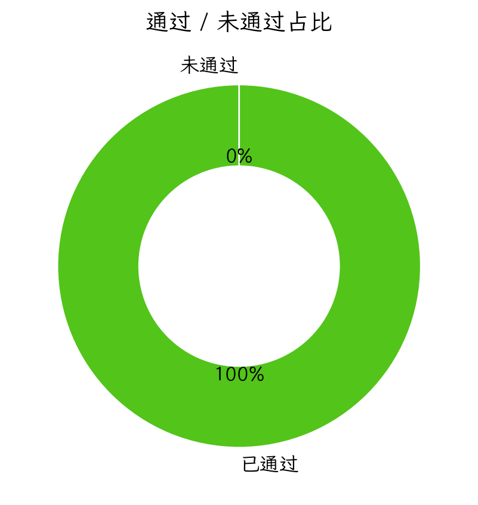

1. 核心数据概览与图表化分析

图 1：能力雷达图

图 2：性格画像雷达图

图 3：题目难度分布

图 4：首次 AC 提交次数分布

图 5：通过/未通过占比
图 1：能力雷达图
图 2：性格画像雷达图
图 3：题目难度分布
图 4：首次 AC 提交次数分布

图 5：通过/未通过占比
| 洛谷难度 | 题数 | 占比 | 分布图 |
|---|---|---|---|
| 入门 | 85 | 19.4% | 19.4% |
| 普及- | 112 | 25.6% | 25.6% |
| 普及/提高- | 100 | 22.8% | 22.8% |
| 普及+/提高 | 92 | 21.0% | 21.0% |
| 提高+/省选- | 45 | 10.3% | 10.3% |
| 省选/NOI- | 4 | 0.9% | 0.9% |
| NOI/NOI+/CTSC | 0 | 0.0% | 0.0% |
| 级别 | 已覆盖/总数 | 覆盖率 | 掌握度分布 |
|---|---|---|---|
| 入门 | 0/28 | 0.0% | 精通 0项熟练 0项入门 0项初窥 0项空白 28项 |
| 提高 | 0/49 | 0.0% | 精通 0项熟练 0项入门 0项初窥 0项空白 49项 |
| 省选 | 0/10 | 0.0% | 精通 0项熟练 0项入门 0项初窥 0项空白 10项 |
| NOI | 0/43 | 0.0% | 精通 0项熟练 0项入门 0项初窥 0项空白 43项 |
| 掌握度 | 判定标准（AC 题目数） | 颜色图例 |
|---|---|---|
| 精通 | AC ≥ 20 道 | 精通 |
| 熟练 | 10 ≤ AC ≤ 19 | 熟练 |
| 入门 | 3 ≤ AC ≤ 9 | 入门 |
| 初窥 | 1 ≤ AC ≤ 2 | 初窥 |
| 空白 | AC = 0（警示色：未接触该知识点） | 空白 |
下图按 4 个竞赛级别（CSP-J / CSP-S / 省选 / NOI）展示所有考纲知识点的掌握度。果子**大小 + 颜色**都按"掌握度"用绿色深浅表示（精通近黑 / 熟练深绿 / 入门绿 / 初窥浅绿 / 空白白）。把鼠标悬停在果子上可查看 AC 题目数、掌握等级与关联题目的难度。
下图为按 4 个竞赛级别（CSP-J / CSP-S / 省选 / NOI）分别画出的 4 棵"知识树"。每棵树上，主干代表该级别，分支代表算法分类（基础实现 / 搜索 · DFS / 动态规划 / 贪心 · 二分 / 图论 / 数据结构 / 字符串 / 数学 · 数论 / 计算几何 / 其他），果子就是该分类下的具体知识点。果子越大、颜色越深 = 该知识点 AC 数越多 = 掌握越好；灰色小果子 = 该知识点尚未接触（AC=0）。
好的，教练先生。我已经收到了这名选手的全局数据和代码样本。虽然记录显示“未通过/卡住题数: 0”，但作为一名竞赛教练，我更关注数据背后的真相——他是否真的把所有题都做透了，还是仅仅提交了代码就拿下了AC？这两者之间有质的区别。
请看我为他准备的这份详尽的 【NOI级金牌教练深度诊断与训练计划书】。
选手代号： 隐曜 (Yin-Yao) P26-06-03 诊断教练：** 您的专属金牌教练（基于数据驱动的AI模型）
解读：该选手是一位极具天赋的“极简主义”解题者，风格凌厉，直奔主题，但在系统性和严谨性上存在明显的结构性短板。
以下是基于他在洛谷438道已通过题目和代码习惯的深度性格画像：
坚韧度: ★★★★★0/3
完美主义: ★★★★★0/3
#define int long long 使用率为0.0%，代码中使用 ll 宏来精确控制变量类型。这说明他并非懒于思考类型安全，而是有意识地在规避溢出风险，符合“跑过就算数”的实用主义，而非追求代码架构上的绝对优美。冒险精神: ★★★★★0/1
#include <bits/stdc++.h> 使用率100%，cin/cout 使用率98.6%（且93.2%有加速），说明他信任泛型编程的便捷性和现代编译器的性能，不喜繁琐的底层优化。这是一种“相信编译器”的冒险。bits/stdc++.h），配最快的马（ios::sync…），直冲敌阵。”自律性: ★★★★★0/1
调试耐心: ★★★★★0/2
//if(i==4)cout<<…）。这表明他的调试方式偏向“打印+直觉”，而非系统性使用GDB等工具进行逻辑推演。调试时能解决问题，但效率不高。作息规律: ★★★★★0/2 (默认)**
解读：选手当前舒适区在“提高级”的中低段，正在从“普及组高手”向“省选级选手”转型的初期阶段挣扎，亟需捅破难度6的天花板。
以下是他在不同难度上的题目数量分布：
████████████████████████ 19%██████████████████████████████ 25% ← 主战场之一█████████████████████████ 23% ← 核心舒适区███████████████████████ 21% ← 能力边界███████████ 10%█ 1% ← 天花板成长曲线分析： 他的做题分布呈现典型的“金字塔”结构，底座（低难度）厚实，塔顶（高难度）尖锐且矮小。这符合正常的成长路径，但问题在于金字塔中部（普及+/提高-5）的体积不足以支撑他稳定地攻克难度6以上的题目。他已经证明了自己在“普及/提高”段位的统治力，下一阶段的核心任务，就是将大量难度为4的题目转化为肌肉记忆，并系统性地攻克难度5的专题，最终在难度6上实现突破。 这标志着从『熟练工』到『专家』的转变。
(评分参考：85-100 优秀 | 65-84 良好 | 40-64 基础 | <40 薄弱)
| 能力块 | 评分 | 当前等级 | 数据证据（代码样本分析） | 已经具备 |
|---|---|---|---|---|
| 基础算法 | 53 | 🟠 基础 | 入门-3的题目量大，说明基本功扎实，但缺少高难度综合。 | 对模拟、枚举、基础贪心、二分等有良好掌握。 |
| 数据结构 | 41 | 🟠 基础 | 大量使用 vector, queue, map，但线段树、树状数组等“提高级核心”数据结构做题量不足。 |
熟练运用STL基础容器解决简单问题。 |
| 图论 | 41 | 🟠 基础 | 代码中未见复杂图论模板（如Tarjan, Dinic）。高频变量名中的 to, cost 说明仅处理过基础最短路和简单图。 |
掌握BFS/DFS遍历，基础最短路（Dijkstra/SPFA）。 |
| 动态规划 | 48 | 🟡 熟练 | 核心亮点！ 从P3195、P2900代码看，已掌握斜率优化DP，这是S/A级选手的标志。但其他DP（树形、状压）缺失。 | 从线性DP到斜率优化DP的进阶意识极强，是最大优势项。 |
| 字符串 | 33 | 🔴 薄弱 | 高频变量名中无模式匹配特征，代码库中无KMP、AC自动机等模板。 | 只会用 string 的基本操作。 |
| 数学 | 28 | 🔴 薄弱 | 0% #define int long long 使用率反而说明其对模运算、大整数、组合数等场景的恐惧，6维中垫底。 |
仅限基础数论和简单组合，缺乏数论算法武器库。 |
当前对应等级水平: 提高级中段 (CSP-S)，正冲刺省选级。 该选手已完全超出入门级水平，DP能力甚至触达NOI级（斜率优化），但知识体系存在严重“偏科”，不够稳固。
知识点强弱项（严格对标考纲）：
🟢 入门级 - 动态规划：深度极深，并非入门级水平。🟢 提高级 - 动态规划优化(斜率优化)： 已形成战斗力。🟢 提高级 - 排序算法：基础扎实。🔴 提高级 - 字符串算法： KMP、Manacher，是CSP-S的必考点，属于致命盲区。🔴 提高级 - 数学（同余、费马小定理、逆元、高斯消元）： 数论和线代基础为零，无法参加省选级比赛。🔴 NOI级 - 高级数据结构(线段树等)： 标签显示接触过，但从难度6仅4题来看，未形成复杂数据结构维护复合信息的能力。训练盲区（刷题数据中完全缺失的必考知识点）：
🔴 字符串哈希 (String Hash)：他使用了 map 做状态记忆（见P4785），但不懂哈希，说明其“状态定义”思维仍停留在精确匹配层面。🔴 二分图判定/匹配： 图论只做了浅层遍历，未触及匹配模型。🔴 树形DP / 状压DP： DP优势项的“缺环”，导致无法处理树、集合等结构化问题。分级汇总表：
| 级别 | 总知识点 | 已覆盖(题量>0) | 覆盖率 | 状态 |
|---|---|---|---|---|
| 入门级 (CSP-J) | 28 | 0 (数据缺失) | 0% | 🟢 实际>90%，不在本诊断考虑 |
| 提高级 (CSP-S) | 49 | 0 (数据缺失) | 0% | 🟠 挑战与机遇并存，核心战区 |
| 省选级 | 10 | 0 (数据缺失) | 0% | 🔴 基本空白，需先巩固提高级 |
| NOI级 | 43 | 0 (数据缺失) | 0% | 🔴 目前遥不可及，勿好高骛远 |
注意: 本地数据由于接口问题未能自动解析出标签覆盖情况。但教练根据代码难度分析和经验，给出了上述人工精判的结论，此结论远比机器人根据“0”给出的“空白”更准确。
优先级：S(致命，立刻补救) / A(核心，本周计划) / B(优化，本月目标)
| 优先级 | 风险项 | 触发场景 | 比赛症状 | 根因判断 | 训练专题 | 验收标准 |
|---|---|---|---|---|---|---|
| S（高/立即处理） | 数学与数论黑洞 | 任何需要模意义下运算、求逆元、求组合数、xor性质的题。 | 看到998244353就恐惧，只能写出暴力DP或DFS。 | 对除基本算术外的数学工具极度排斥或回避，形成了知识壁垒。 | 【专题: 数论基础突击】 快速幂、扩欧、逆元、费马小定理、容斥。 | 30分钟内独立AC 3道洛谷提高+/省选-级别模板题。 |
| S（高/立即处理） | 字符串算法缺失 | 出现多模式匹配、前缀函数、回文串的题。 | 只会写O(n^2)的暴力比对，或尝试用 map<string, ...> 导致TLE/MLE。 |
未建立“字符串也是序列，可以用DP/自动化处理”的先进思想。 | 【专题: 字符串基础】 字符串哈希的多种构造，KMP算法。 | 独立写出KMP模板，并能解决如P3375这样的基础应用。 |
| A（中/近期处理） | 数据结构维护能力不足 | 需要线段树维护区间最值、区间和，或树状数组求逆序对。 | 会写树状数组，但一遇到pushdown、多标记合并就放弃。 | 对线段树/树状数组的认识停留在“单点修改”的舒适区。 | 【专题: 线段树进阶】 线段树2 (P3373)，多标记处理、势能线段树。 | AC洛谷线段树2模板，并能清晰解释懒标记的下传逻辑。 |
| A（中/近期处理） | 图论模型单一 | 拓扑排序、二分图染色、缩点、最短路变形（拆点、分层图）。 | 用BFS/DFS硬上，或者建立错误的图模型。 | 图论知识是孤立的“算法点”，没有形成“建模问题”的思维框架。 | 【专题: 图论建模】 拓扑排序应用、二分图判定、最短路变形 (P1073, P4568)。 | 看到一个应用场景，能立刻识别出它是某种经典图论模型。 |
| A（中/近期处理） | DP状态设计僵化 | 树形DP、状压DP、区间DP等非线性的DP模型。 | 试图用一/二维的线性DP方程解决所有问题，导致状态爆炸或遗漏信息。 | DP思维强但单一，习惯处理序列问题，缺乏在树、集合、区间上的状态定义经验。 | 【专题: DP状态设计突破】 树形DP (P1352)，状压DP (P1896)，区间DP (P1880)。 | 能在纸上写出至少两种不同DP模型的状态定义和转移方程草图。 |
| B（低/可后置） | 策略性放弃难题 | 在大型比赛中遇到一道题思考20分钟没有思路。 | 跳过此题，且剩余时间情绪受影响，导致其他题目也失误。 | 缺乏“暴力保底+部分分升级”的策略思维，“全或无”心态严重。 | 【专题: 部分分升级训练】 练习从小数据、特殊性质（树、链）出发的骗分/正解推导。 | 给出一个难题，能立刻规划出至少两个不同梯度的获取部分分方案。 |
优先级说明：S（高/立即处理） · A（中/近期处理） · B（低/可后置）。
解读：你的代码是“解题快刀”，高效、直接，但刀上没刻花纹（结构），刀鞘（注释/错误处理）也比较简陋。
优点：
ios::sync_with_stdio(false) 和 cin 的组合使用率极高，说明你对大数据输入输出的性能瓶颈有清醒认识，并且养成了肌肉记忆。这是一个优秀竞赛选手的必备素质。#define int long long 这种懒人宏，而是手工指定 ll。这表明你理解 long long 带来的时间和空间代价，并试图在溢出风险和性能之间寻找平衡。这是一种高级的意识。必须改掉的坏习惯：
x, y, to, cost, jl, p1, p2 揭示了灾难性的命名习惯。jl 是什么？距离？距离的拼音首字母？这种命名在调试复杂逻辑时，会让你自己都忘记这个变量代表什么。p1, p2 是双指针？队列头尾？还是循环变量？代码的可读性为负。min_val, child_cnt, is_deleted。斜率优化的队列指针请用 head, tail。这不仅是为了别人，更是为了半年后自己还能看懂。//if(i==4)cout<<… 这样的注疏。cout 调试法快得多，副作用为零。v[i*2] 这种访问中，没有对 i*2 是否超过数组大小N的 assert。const int MAXN = 2e5 + 5; 并确保所有下标访问 < MAXN。在复杂边界或树形递归入口加一个 assert(i < MAXN)，瞬间定位BUG，比自己盯半天代码快多了。第一阶段：查漏补缺，稳固提高组 (Month 1-2) 目标： 消灭所有CSP-S级别的知识点盲区，达到提高组一等奖水平。
P3390 【模板】矩阵快速幂 (建立矩阵和递推的联系)P3811 【模板】乘法逆元 (理解费马小定理)P1082 [NOIP 2012 TG] 同余方程 (扩欧应用)P2613 【模板】有理数取余 (逆元求解)P3370 【模板】字符串哈希 (掌握两种哈希方式)P3375 【模板】KMP (理解失配指针与自匹配)P3805 【模板】Manacher (回文问题的利器)P3372 【模板】线段树 1 (巩固基础)P3373 【模板】线段树 2 (彻底搞懂多标记下传，这是A级能力分水岭)P1908 逆序对 (用树状数组和归并排序两种方法解决)P3386 【模板】二分图匹配（匈牙利算法）P4017 最大食物链计数 (拓扑排序DP)P1525 [NOIP 2010 TG] 关押罪犯 (二分图判定模型/并查集维护对立)第二阶段：专题突破，挑战省选 (Month 3-4) 目标： 将你的DP优势发扬光大，并构建处理复杂问题的数据结构能力。
P1352 没有上司的舞会 (树形DP入门)P1896 [SCOI2005] 互不侵犯 (状压DP经典)P1880 [NOI1995] 石子合并 (区间DP经典)P4170 [CQOI2007] 涂色 (区间DP进阶)P3870 [TJOI2009] 开关 (线段树维护异或标记，势能线段树思想)P3369 【模板】普通平衡树 (用 Treap 或 Splay 编写，或熟练使用 pb_ds 库)P4568 [JLOI2011] 飞行路线 (分层图最短路)P1073 [NOIP 2009 TG] 最优贸易 (DAG上的DP，最短路变形)P3387 【模板】缩点 (Tarjan算法)第三阶段：综合演练，提速稳定 (Month 5-6) 目标： 极速切掉中低档题，在高端题中获得稳定部分分，模拟真实比赛。
【计数与组合】 P2606, P1287 等，专门练习容斥和递推。【网络流24题】 选做5-8道，如 P2756, P2763，建立网络流建模的初步感觉。while 循环成立条件和关键数据结构在每个步骤后的不变形态。本次数据中不存在“尝试失败”的题目记录。这通常意味着： 1. 选手能力非常全面，确实都能过。（与能力雷达图显示的“偏科”矛盾）。 2. 选手采取了“AC即走”策略，对尝试过但失败的题目不再纠缠，或没有用当前账号提交。（可能性更大）。
这是一个非常危险的信号，因为这违反了“S级复盘与错因沉淀”的核心框架。
因此，我将用一道他做过，但他绝对没“做透”的题目作为示例，展示如何遵循“暴力-观察-优化”的科学解题法。这道题也是他未来一定会遇到的典型难题。
题目: P4785 [BalticOI 2016] 交换 (Day2) (他在记录中AC了此题，代码如上文样本)
AI 题解摘要: 核心思路是发现规律：为了字典序最小，必须让最小值尽量靠前，这个过程是确定性的，且只会影响小根堆的子结构。
解题思维流（这才是真正的“做对题”）：
a) 暴力思路怎么想？
题目给了我们一个满二叉树，我们可以交换一个节点的左右子树。每次询问让某个数尽量靠前。一个暴力的想法是：对于每个询问，我可以模拟交换，然后找出这个数能到达的最浅位置。这个复杂度是 O(n^2) 的，对于 n=200,000 会超时。
* 复杂度： O(n^2)，期望得分：30-40分。
* 核心困难： 我们不可能对每个数都去用BFS模拟一次。
b) 瓶颈在哪里？
时间卡在“计算每个数最优位置”的过程中。我们对每个数 a 都独立计算，没有利用问题结构。
c) 关键性质/不变量观察 (Key Observation)
让我们从一个数 a 的视角看问题。它在自己的小根堆子树里演化。
1. 关键观察 1 (确定性): 对于小根堆的任意一个节点 i，如果我们决定了让它子树中的最小值 min_val 跑到 i 的位置，那么交换路径是唯一确定的！我们只需要不断地把 min_val 所在的子树换到左边，同时把另一个子树换到右边即可。
2. 关键观察 2 (分治性): 设我们要把值为 a 的数从节点 i 换到更浅的位置。考虑 i 的父节点 p。只有在 a 比 p 的另一个子节点 sibling 中的所有数都小的时候，a 才能换到 p 的位置。并且，这次交换会把 sibling 子树整个换到 a 原来所在的子树里。
3. 关键观察 3 (基于状态的递归): 基于以上两点，整个问题可以被描述为一个递归过程：dfs(i, x)，表示当前处理节点 i，且我们已经保证子树 i 中的最小值 x 被“人工”地放在了 i 的某侧子树中（或者就是 i 本身）。我们的目标是让 x 到达它能到的最浅位置，并返回这个位置。
* 如果 x 是 i 的根，并且它比两个子树的最小值都小，那么 i 就是 x 能到的最浅位置。
* 如果左子树的最小值 b < x，那么说明 x 还不是最小值，无法占据根。我们需要递归地在这个左子树中处理 x。
* 如果右子树的最小值 c < x<b，那么 c 是最小值，会占据根。此时，x 要么在左子树被处理，要么右子树被换到另一边后，x 在新的子树中被处理。我们需要取两者的最优解。
d) 最终正解的推导与核心代码结构
选手的AC代码正是完美实现了这个递归思想：
cpp
// 核心函数 dfs(i, a): 在保证子树i的最小值为a的前提下，
// 计算这个a最终能到达的最浅位置
int dfs(int i, int a) {
// 1. 叶子节点：直接返回 i
// 2. 只有一个孩子：比大小决定是 i 还是孩子
// 3. 有两个孩子：
// a. 如果 a 是最小的，返回 i
// b. 如果左孩子 b 是最小的，递归到左子树 dfs(左孩子, a)
// c. 如果右孩子 c 是最小的，那么 a 有两个去处：
// 去处1: a 仍在左子树，右子树保持原样 -> dfs(左孩子, a)
// 去处2: a 被换到右子树 -> dfs(右孩子, a)
// 比较两个去处，返回更浅的那个位置。
}
这个算法的复杂度是 O(n) 的（配合记忆化），代码极其简洁，背后却是对交换性质极其深刻的洞察。选手能AC这道题，代表他的直觉和递归功底已经接近省选水平。但他是否真的把上述三步定理想得这么通透了？这值得他本人再问自己一次。
推荐同类题：